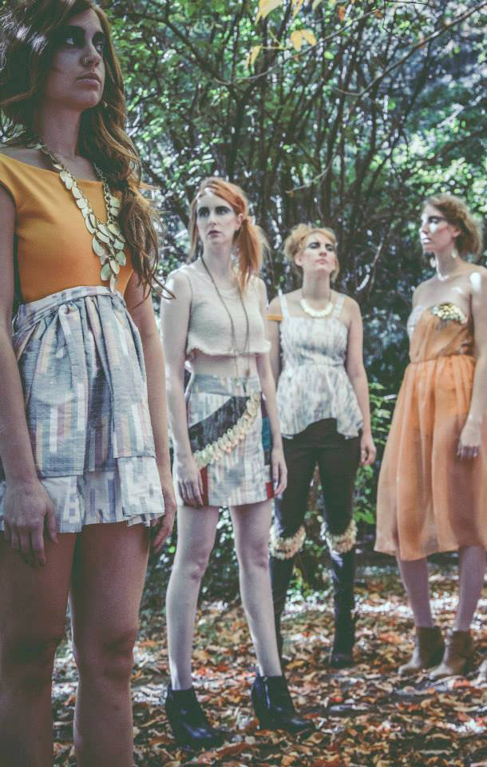
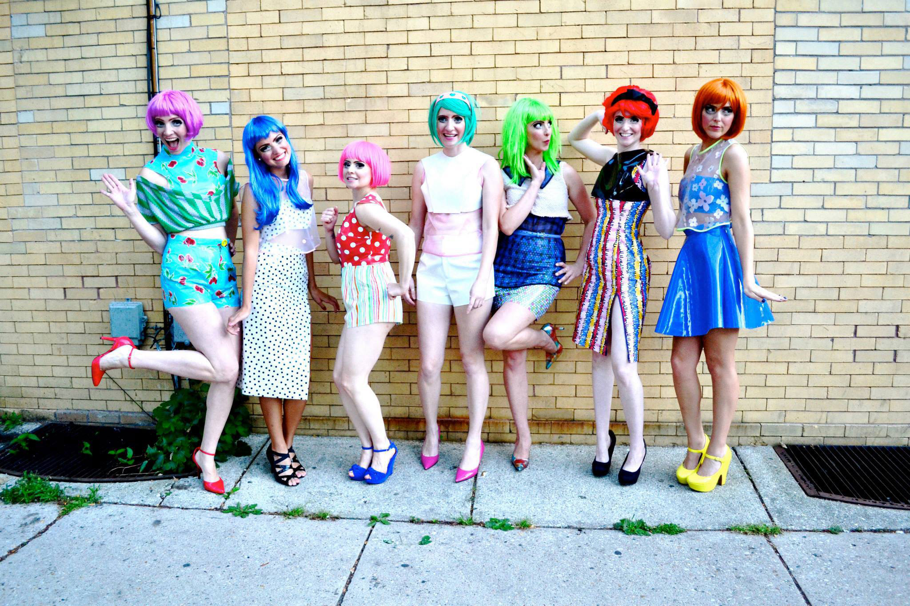

Run Away! by Sara Terrell
Budding Milwaukee designer Sara Terrell is one of a kind, just like her fashion line Run Away! by Sara Terrell. Designing before she could even sew, Terrell always had an interest in fashion. She used high school Homecoming as her runway debut by designing her own dress because the dress she wanted couldn’t be bought. She has been designing ever since.
Just like that homecoming dress, her designs aren’t cookie cutter. Each one speaks for itself, whether it is a play on a school girl uniform, an Andy Warhol factory party, or a modern take on the roots of patchwork quilting.
The journey has been slow according to the 26 year old designer originally from Rubicon, a small town in Dodge County Wisconsin, but it has not been without momentum and passion. Milwaukee itself has been trodding along in the fashion scene, but that is changing with designers like Terrell, and other local designers offering a fresh vision and setting a new pace for fashion in Milwaukee.
amfm: How did you get into designing? Is this something you went to school for and aspired to do? Do you remember the first thing you designed?run away! by sara terrell: I have always been interested in fashion and expressing myself in my clothing. Before I attended college I didn't have much experience with sewing. I would design dresses and have my grandma sew them for me. The first thing I designed and had produced was my junior year homecoming dress in high school. I wanted a dress that was completely different from what was on the racks at that time, so my grandma helped me create my vision. After high school I went to Mount Mary University and majored in Apparel Product Development and began producing my own designs.
amfm: You started your own fashion label Run Away! in 2009, what has your journey been like?
run away: My label Run Away! was created when I started selling my clothing and jewelry designs at Sparrow Collective in Bay View. My journey has been a slow one, I started participating in local independent fashion shows in 2012 and since then it has been much more exciting. New opportunities are constantly being presented to me, it's so hard to choose which one to pursue.
amfm: Some of your work is theme based, like your school uniform collection, and nerd look, versus a pop art feel with another. How and why are you inspired by themes and avant garde? Where do the ideas come from?run away: I like to have fun with fashion and tend not to take myself too seriously. Themes are a way for me to show my own take on something that we all see. I feel it allows the audience to relate to the designs and have fun with them themselves. I really enjoy doing art to wear because it allows me to try new things and use new mediums. I also enjoy up-cycling everyday objects. The ideas come from my environment. I've been inspired by a single sculpture, a painting, a deck of cards, a song, a TV show and much more. A lot of my inspiration also comes from fabric, I enjoy mixing many different colors and textures. Both ready to wear and art to wear have their ups and downs, but I'd say I have more fun with my avant-garde pieces. In order to get the best of both worlds I often incorporate both elements in my designs.
amfm: What particular kind of person do you have in mind when you design clothes? Do you wear your own designs?run away: I'm a very eclectic person and with each collection I design, I have a different person and different part of me in mind. Generally speaking my collections are for women who are fun and fearless and that woman comes in all ages and sizes. Generally speaking I don't design for myself except for special occasions. I enjoy making clothes for other people much more. I like to be able to put one of my designs on someone and make them feel like they're the best looking person in the room.
amfm: What is your impression of the fashion climate in Milwaukee? How are you able to market yourself and your designs here?run away: I feel that Milwaukee is really starting to prove itself in the fashion industry. Not only do we have great companies and local designers but our streets are filled with great style. I haven't marketed myself and my designs as much as I should. I connect with fans through Facebook, I post updates on new shows and projects I am working on. Otherwise, so far selling at Sparrow Collective and meeting great people is the reason I get to do what I love.
amfm: What has been your most proud moment as a designer thus far?run away: I am always proud of the times I get to show my collections with other designers, especially local ones. I love being able to share the energy and excitement with my colleagues. Two moments come to mind, the time fellow designer Amanda Martinez and I put on the Creme de la Cream City Fashion Show at Club Garibaldi last August. It was great to have the experience of putting together a show and I was very proud of my collection that was shown. Also, I was very thankful to be a part of Miranda Levy's Return to the Runway last February. It was a wonderful experience to share that runway with so many talented designers and to be able to show my work to so many people.
amfm: What's next for you?run away: Next I would like to create a plus size collection. Being plus size myself, I understand the difficulties of finding something stylish and flattering to wear. I'm looking forward to creating a collection that can make all women feel stylish and chic.
|  |  |
For more from Run Away! By Sara Terrell:
Run Away!By Sara Terrell on Facebook
photo credits: Sara Terrell, The Regular Room